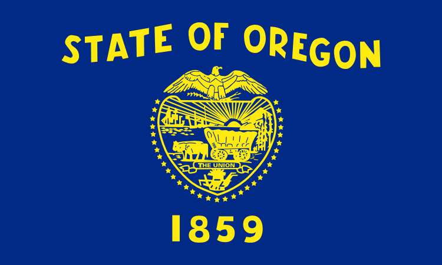

Portland is a seaport and the largest city in the U.S. state of Oregon and the seat of Multnomah County.
Named after Portland, Maine, the Oregon settlement began to be populated in the 1830s near the end of the Oregon Trail.
After the city's economy experienced an industrial boom during World War II, its hard-edged reputation began to dissipate.
Corvallis is a city in central western Oregon, United States. It is the county seat of Benton County and the principal city of the Corvallis, Oregon Metropolitan Statistical Area.
In October 1845, Joseph C. Avery arrived in Oregon from the east. Avery took out a land claim at the mouth of Marys River where it flows into the Willamette River and in June 1846 took up residence there in a log cabin .
Corvallis is the largest principal city of the Albany-Corvallis-Lebanon CSA, a Combined Statistical Area that includes the Corvallis metropolitan area (Benton County) and the Albany-Lebanon micropolitan area (Linn County),which had a combined population of 202,251 at the 2010 U.S. Census. .
Eugene is a city of the Pacific Northwest located in the U.S. state of Oregon. It is located at the southern end of the Willamette Valley, near the confluence of the McKenzie and Willamette Rivers, about 50 miles (80 km) east of the Oregon Coast.
As of the 2010 census, Eugene had a population of 156,185; it is the second most populous city in the state (after Portland) and the county seat of Lane County.
Eugene is home to the University of Oregon and Lane Community College. The city is also noted for its natural beauty, recreational opportunities (especially bicycling, running/jogging, rafting, and kayaking), and focus on the arts. Eugene's official slogan is "A Great City for the Arts and Outdoors".
Salem is the capital of the U.S. state of Oregon, and the county seat of Marion County. It is located in the center of the Willamette Valley alongside the Willamette River, which runs north through the city.
Salem had a population of 154,637 at the 2010 census, making it the third largest city in the state after Portland and Eugene. Salem is less than an hour driving distance away from Portland.
The city is home to Willamette University, Corban University, and Chemeketa Community College. The State of Oregon is the largest public employer in the city, and Salem Health is the largest private employer.
Bend is a city in, and the county seat of Deschutes County, Oregon, United States. It is the principal city of the Bend, Oregon Metropolitan Statistical Area. Bend is Central Oregon's largest city, and despite its modest size, is the de facto metropolis of the region, owing to the low population density of that area.
Bend is located on the eastern edge of the Cascade Range along the Deschutes River. Here the Ponderosa Pine forest transitions into the high desert, characterized by arid land, junipers, sagebrush, and bitter-brush.
Oregon was inhabited by many indigenous tribes before Western traders, explorers, and settlers arrived. An autonomous government was formed in the Oregon Country in 1843 before the Oregon Territory was created in 1848. Oregon became the 33rd state on February 14, 1859. Today, at 98,000 square miles (255,000 km²),
Oregon's landscape is diverse, with a windswept Pacific coastline; a volcano-studded Cascade Range; abundant bodies of water in and west of the Cascades; dense evergreen, mixed, and deciduous forests at lower elevations; and a high desert sprawling across much of its east all the way to the Great Basin.